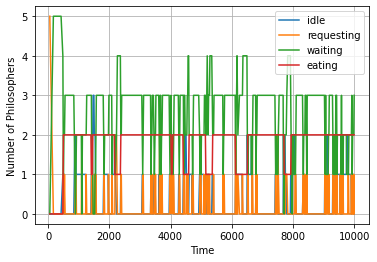
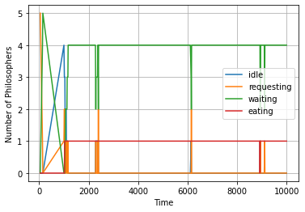

Team Members
| Graphs |
|---|
| Baseline experiment |
|  |
| Much less stable. Varying number of philosophers waiting. Multiple initial deadlocks |
| Extra chopstick |
|  |
| Many initial deadlocks. Higher “resting” number of waiting philosophers. Much more stable and consistent. Every time a request is made it is addressed immediately |